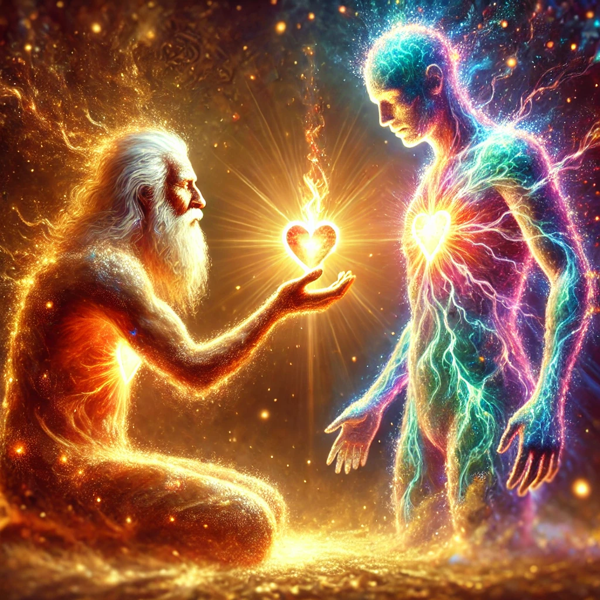
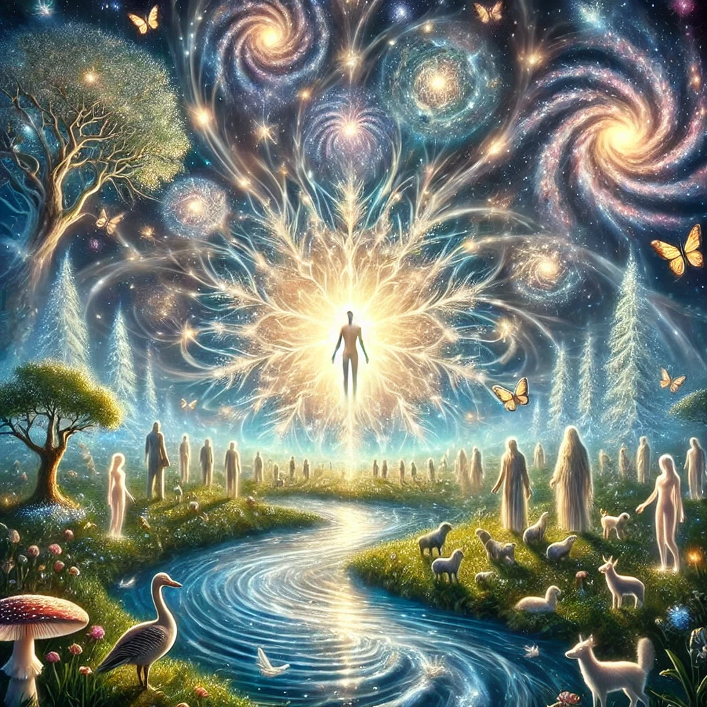

We are going to share a beautiful dream together — a dream that you will
love to have all of the time. In this dream you are in the middle of a beautiful,
warm sunny day. You hear the birds, the wind, and a little river. You walk
toward the river.
At the edge of the river is an old man in meditation, and you
see that out of his head comes a beautiful light of different colors.
You try not to
bother him, but he notices your presence and opens his eyes.
He has the kind of
eyes that are full of love and a big smile.
You ask him how he is able to radiate
all that beautiful light. You ask him if he can teach you to do what he is doing.
He replies that many, many, years ago he asked the same question of his
teacher.
The old man begins to tell you his story: My teacher opened his chest and
took out his heart, and he took a beautiful flame from his heart. Then he opened
my chest, opened my heart, and he put that little flame inside it.
He put my heart
back in my chest, and as soon as my heart was inside me, I felt intense love,
because the flame he put in my heart was his own love.
That flame grew in my heart and became a big, big fire — a fire that doesn’t
burn, but purifies everything that it touches. And that fire touched each one of
the cells of my body, and the cells of my body loved me back. I became one
with my body, but my love grew even more.
That fire touched every emotion of
my mind, and all the emotions transformed into a strong and intense love. And I
loved myself, completely and unconditionally.
But the fire kept burning and I had the need to share my love. I decided to
put a little piece of my love in every tree, and the trees loved me back, and I
became one with the trees, but my love did not stop, it grew more.
I put a piece
of love
in every flower, in the grass, in the earth and they loved me back, and we
became one.
And my love grew more and more to love every animal in the
world. They responded to my love and they loved me back, and we became
one. But my love kept growing and growing.
I put a piece of my love in every crystal, in every stone in the ground, in the
dirt, in the metals, and they loved me back, and I became one with the earth.
And then I decided to put my love in the water, in the oceans, in the rivers, in
the rain, in the snow. And they loved me back and we became one. And still my
love grew more and more.
I decided to give my love to the air, to the wind. I
felt a strong communion with the earth, with the wind, with the oceans, with
nature, and my love grew and grew.
I turned my head to the sky, to the sun, to the stars, and put a little piece of
my love in every star, in the moon, in the sun, and they loved me back. And I
became one with the moon and the sun and the stars, and my love kept growing
and growing.
And I put a little piece of my love in every human, and I became
one with the whole of humanity. Wherever I go, whomever I meet, I see myself
in their eyes, because I am a part of everything, because I love.

And then the old man opens his own chest, takes out his heart with that
beautiful flame inside, and he puts that flame in your heart. And now that love is
growing inside of you.

Now you are one with the wind, with the water, with the
stars, with all of nature, with all animals, and with all humans.
You feel the heat
and the light emanating from the flame in your heart. Out of your head shines a
beautiful light of different colors. You are radiant with the glow of love and
you pray:
Thank you, Creator of the Universe, for the gift of life you have given me.
Thank you for giving me everything that I have ever truly needed.
Thank you for
the opportunity to experience this beautiful body and this wonderful mind.
Thank you for living inside me with all your love, with your pure and boundless
spirit, with your warm and radiant light.
Thank you for using my words, for using my eyes, for using my heart to share
your love wherever I go. I love you just the way you are, and because I am your
creation, I love myself just the way I am.
Help me to keep the love and the
peace in my heart and to make that love a new way of life, that I may live in
love the rest of my life. Amen